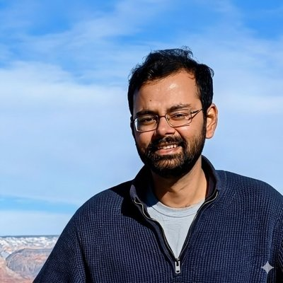

I'm a postdoctoral fellow at Caltech, working on cosmological surveys and statistical methods for extracting signals from large-scale astrophysical datasets. On the side, I like tinkering with machine learning.

MPI-parallel bispectrum computation. Independently validated by two subsequent groups.
JAX-based affine-invariant MCMC sampler for Bayesian inference.
Dockerized Zel'dovich & 2LPT initial condition generator for N-body simulations.
Remote tunneling tools for Jupyter notebooks and TensorBoard.